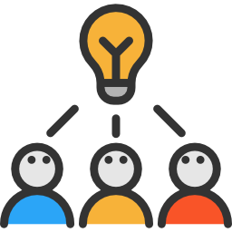

¡Conocenos!
Somos un grupo de amigos que nos ocurrio la idea de armar un cafe/bar en plena ciudad, dandonos a conocer por nuestra excelencia, ya que cada uno al inicio cumplio un rol vital, tenemos a Nico, que cumplio el rol de barista y atender las mesas, Luis, se encargo de la cocina y el desarrollo de nuevas comidas, Marcos, se encargo del Marketing del Negocio y la atencion de la caja.
Una vez tuvimos esta idea, tuvimos que llevarla a cabo, conseguimos algunos prestamos, con esto, tambien pudimos entrar a un remate a comprar los objetos necesarios y a si fue como en 2 meses abrimos, nos fue espectacular, por lo cual contratamos a mas de 10 empleados y abrimos una nueva sucursal movil que nos trajo un gran exito y dio pie a seguir creciendo junto a todos nuestros empleados dia a dia. Te damos las gracias por querer conocer un poquito mas el motivo del por que hacemos lo que hacemos.